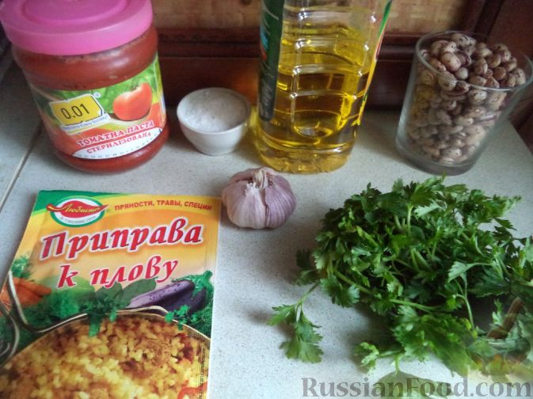
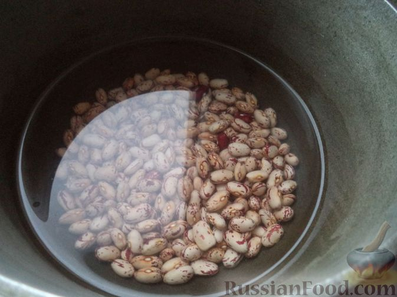
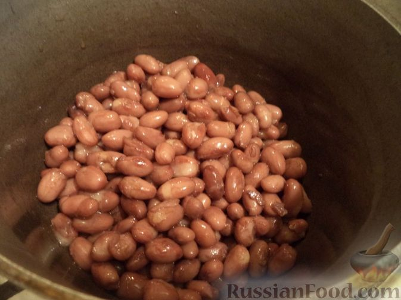
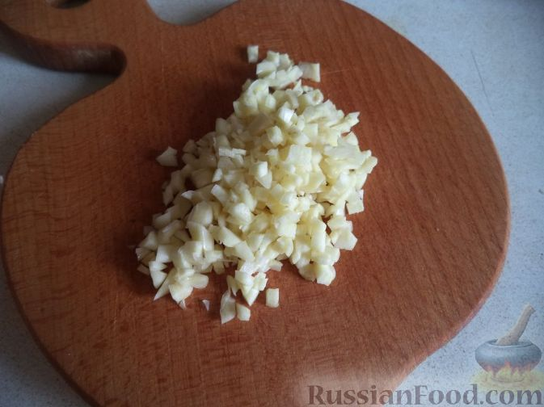
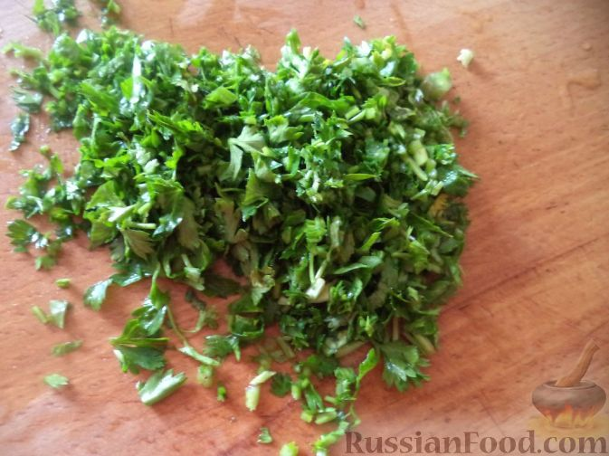
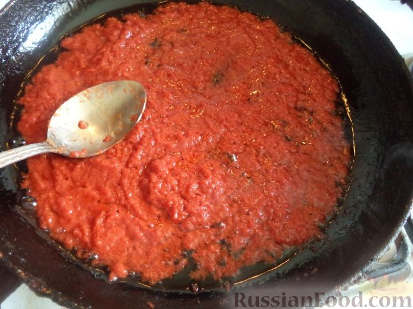
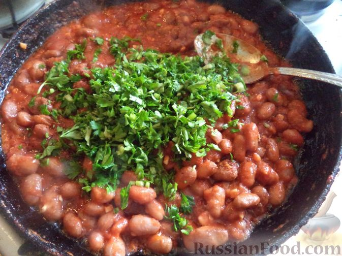
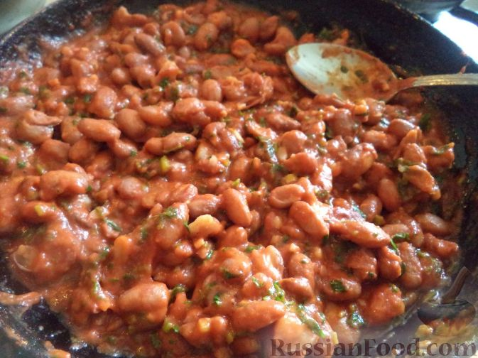

- Продукты для лобио из фасоли с томатом перед вами

- Как приготовить лобио с томатной пастой: Фасоль перебрать, помыть, замочить в холодной воде на 2-6 часов.
В принципе, здесь можете за 2-6 часов немного нахуяриться))

- Налить в казанок 1 л воды. Вскипятить. Затем положить в кипящую воду фасоль и варить до готовности на небольшом огне (около часа), охладить.
Вот здесь проявите сознательность и не нахуярьтесь за час

- Чеснок очистить, мелко порубить.

- Зелень промыть, мелко нарезать.

- Разогреть сковороду, налить растительное масло. Выложить томатную пасту. Томат-пасту спассеровать на растительном масле (около 2-3 минутесли вы успеете нахуяриться за 2-3 минуты - это ваше время!).

- Заправить лобио с томатом солью, специями для плова, рубленым чесноком, кинзой.

- Проварить лобио в томатном соусе 2-3 минуты:-) на небольшом огне.
- Лобио в томате готово! Приятного аппетита!